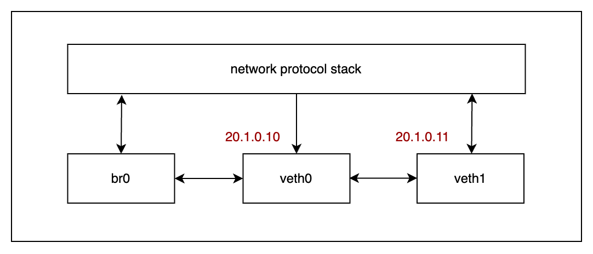
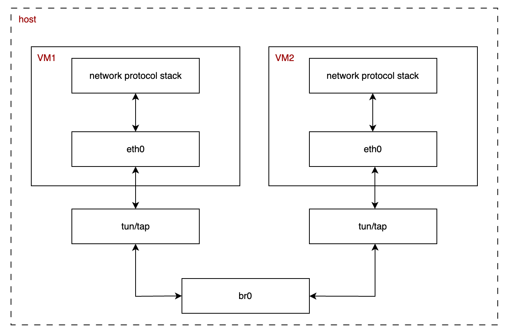
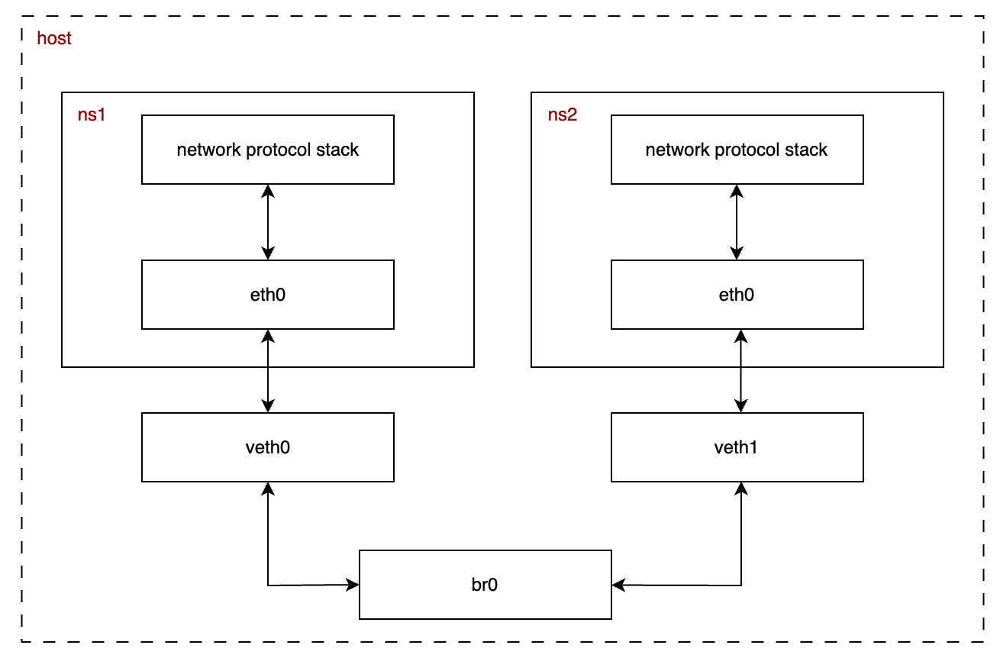

Networking (4) Virtual bridge
Ở bài trước, mình đã tìm hiểu về network namepsace và virtual ethernet, hôm nay mình sẽ tiếp tục tìm hiểu về một thiết bị mạng ảo quan trọng khác, đó là bridge.
Bridge
Bridge là một thiết bị mạng ảo (virtual network device), cũng giống như veth mình đã tìm hiểu ở bài trước, mặc định, bridge hoạt động ở layer 2 (mô hình OSI), và có chức năng tương tự như một switch (kết nối các máy tính ở cùng mạng LAN). Tuy nhiên, khi được gán cho địa chỉ IP, nó cũng có thể hoạt động ở layer 3.
Bridge kết nối vào network protocol stack (mình sẽ dùng NPS để chỉ cụm từ này trong xuyên suốt bài viết) và giống như switch, nó có các cổng để các thiết bị mạng ảo khác có thể kết nối vào như veth, tap,...

Trong linux, chúng ta có thể dùng lệnh ip để tương tác với các thiết bị mạng ảo, hãy cùng tạo ra mô hình như ảnh trên.
ip link add br0 type bridge
ip link set br0 up
ip link add veth0 type veth peer name veth1
ip addr add 20.1.0.10/24 dev veth0
ip addr add 20.1.0.11/24 dev veth1
ip link set veth0 up
ip link set veth1 up
ip link set dev veth0 master br0
# verify result
bridge link
brctl show
Kết quả có được sau khi chạy các câu lệnh trên:
# bridge link
6: veth0@veth1: <BROADCAST,MULTICAST,UP,LOWER_UP> mtu 1500 master br0 state forwarding priority 32 cost 2
# brctl show
bridge name bridge id STP enabled interfaces
br0 8000.8e5ec2c9742a no veth0
Ở bài viết về veth, sau khi tạo 2 virtual ethernet thì veth0 sẽ có 1 đầu kết nối với NPS và đây là một giao tiếp 2 chiều. Ở mô hình trên, mình kết nối veth0 vào br0, vậy hãy xem thử có gì điều khác nhau bằng lệnh ping (lưu ý để arp protocol có thể hoạt động thì bạn phải cấu hình network như ở bài veth).
ping -c 1 -I veth0 20.1.0.11
Sử dụng tcpdump để bắt gói tin trên tất cả network interface:
tcpdump -n -i any
Kết quả của lệnh ping và tcpdump như sau:
# ping
PING 20.1.0.11 (20.1.0.11) from 20.1.0.10 veth0: 56(84) bytes of data.
From 20.1.0.10 icmp_seq=1 Destination Host Unreachable
--- 20.1.0.11 ping statistics ---
1 packets transmitted, 0 received, +1 errors, 100% packet loss, time 0ms
# tcpdump
11:05:40.901664 veth0 Out ARP, Request who-has 20.1.0.11 tell 20.1.0.10, length 28
11:05:40.901671 veth1 B ARP, Request who-has 20.1.0.11 tell 20.1.0.10, length 28
11:05:40.901697 veth1 Out ARP, Reply 20.1.0.11 is-at de:9a:36:c3:48:93, length 28
11:05:40.901698 veth0 In ARP, Reply 20.1.0.11 is-at de:9a:36:c3:48:93, length 28
11:05:40.901698 br0 In ARP, Reply 20.1.0.11 is-at de:9a:36:c3:48:93, length 28
Lần này, gói tin ARP được gửi đi từ veth0 tới veth1 và có phản hồi, tuy nhiên thay vì gói tin phản hồi đi trở lại NPS thì nó đi vào br0, kết quả là NPS không lấy được địa chỉ MAC của veth1 để cập nhật bảng mapping MAC address - IP address cho veth0, mà thông tin này sẽ được cập nhật ở br0, sử dụng lệnh arp -n và brctl showmacs br0 để kiểm chứng lại và nhận được kết quả:
# arp -n
Address HWtype HWaddress Flags Mask Iface
172.17.0.2 ether 02:42:ac:11:00:02 C eth0
20.1.0.11 (incomplete) veth0
172.17.0.1 ether 02:42:9e:e4:b1:d5 C eth0
20.1.0.10 ether 8e:5e:c2:c9:74:2a C veth1
# brctl showmacs br0 -> mac address de:9a:36:c3:48:93 của veth1
port no mac addr is local? ageing timer
1 8e:5e:c2:c9:74:2a yes 0.00
1 8e:5e:c2:c9:74:2a yes 0.00
1 de:9a:36:c3:48:93 no 3.38
Để thực hiện được lệnh ping ở trên thông qua br0, ta phải gán địa chỉ ip cho br0 thay vì veth0, lúc này br0 sẽ có thêm vai trò routing thay vì chỉ đơn thuần là một virtual switch.
ip addr del 20.1.0.10/24 dev veth0
ip addr add 20.1.0.10/24 dev br0
Chạy lại lệnh ping và tcpdump:
ping -c 1 -I br0 20.1.0.11
Ta được kết quả:
# ping
PING 20.1.0.11 (20.1.0.11) from 20.1.0.10 br0: 56(84) bytes of data.
64 bytes from 20.1.0.11: icmp_seq=1 ttl=64 time=0.717 ms
--- 20.1.0.11 ping statistics ---
1 packets transmitted, 1 received, 0% packet loss, time 0ms
rtt min/avg/max/mdev = 0.717/0.717/0.717/0.000 ms
# tcpdump
12:00:17.086571 br0 Out ARP, Request who-has 20.1.0.11 tell 20.1.0.10, length 28
12:00:17.086611 veth0 Out ARP, Request who-has 20.1.0.11 tell 20.1.0.10, length 28
12:00:17.086616 veth1 B ARP, Request who-has 20.1.0.11 tell 20.1.0.10, length 28
12:00:17.086865 veth1 Out ARP, Reply 20.1.0.11 is-at de:9a:36:c3:48:93, length 28
12:00:17.086867 veth0 In ARP, Reply 20.1.0.11 is-at de:9a:36:c3:48:93, length 28
12:00:17.086867 br0 In ARP, Reply 20.1.0.11 is-at de:9a:36:c3:48:93, length 28
12:00:17.086944 br0 Out IP 20.1.0.10 > 20.1.0.11: ICMP echo request, id 106, seq 1, length 64
12:00:17.086947 veth0 Out IP 20.1.0.10 > 20.1.0.11: ICMP echo request, id 106, seq 1, length 64
12:00:17.086948 veth1 In IP 20.1.0.10 > 20.1.0.11: ICMP echo request, id 106, seq 1, length 64
12:00:17.087104 lo In IP 20.1.0.11 > 20.1.0.10: ICMP echo reply, id 106, seq 1, length 64
NPS nhận được ARP reply và nếu sử dụng arp -n để xem lại kết quả, chúng ta sẽ thấy bản ghi của veth1 ở br0:
Address HWtype HWaddress Flags Mask Iface
20.1.0.11 ether de:9a:36:c3:48:93 C br0
172.17.0.1 ether 02:42:9e:e4:b1:d5 C eth0
20.1.0.10 ether 8e:5e:c2:c9:74:2a C veth1
Hãy quay lại ví dụ lúc mà mình chưa thiết lập địa chỉ IP cho br0, nó sẽ là một thiết bị hoạt động đơn thuần ở layer 2 với các ethernet frame, không có sự liên kết trực tiếp đến NPS (layer 3) thông qua routing, nên lúc này các kết nối đến máy chủ vật lý bằng địa chỉ IP thông qua virtual bridge là không thể xảy ra.
Ứng dụng
Virtual machine

Mô hình network cơ bản của VM đó là các NIC trong VM sẽ kết nối với tun/tap device và đi qua br0, lúc này br0 đóng vai trò như 1 switch layer 2. Nếu muốn VM giao tiếp được với máy chủ, chúng ta phải cấu hình thêm địa chỉ IP cho br0 và nó sẽ có thêm vai trò là 1 gateway.
Docker container
Bridge được sử dụng như driver mặc định trong docker, cung cấp sự giao tiếp cho các container chạy trên cùng 1 máy chủ vật lý, mô hình hoạt động như sau:

Ở bài viết tiếp theo mình sẽ phân tích chi tiết hơn về mô hình này và cách docker dùng port forwarding bằng iptables.
Tổng kết
Bài viết này mình đã tìm hiểu qua một thiết bị mạng ảo quan trọng đó là bridge, cách nó hoạt động ở layer 2 và layer 3 cũng như một số ứng dụng trong thực tế.